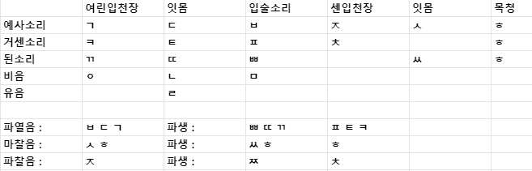

자음 체계는 복잡합니다. 여러 기준들을 묶었는데,
소리나는 위치 - (입술,잇몸,센입천장, 여린입천장, 목청)
소리내는 방법 - (파열음, 마찰음, 파찰음, 비음, 유음)
또한, 소리내는 방법 중 비음, 유음을 제외하고 파생적으로 예사소리, 된소리, 거센소리가 존재합니다.

입술 소리는 'ㅁ'같이 닫힌 글자(ㅂ, ㅃ, ㅍ, ㅁ)만입니다.
여린 입천장에는 ㄱ과 ㅇ, 잇몸에는 ㄷ ㄴ ㄹ ㅅ가 있습니다.
그외, 센 입천장은 ㅈ, 목청은 ㅎ로 한개씩 입니다.